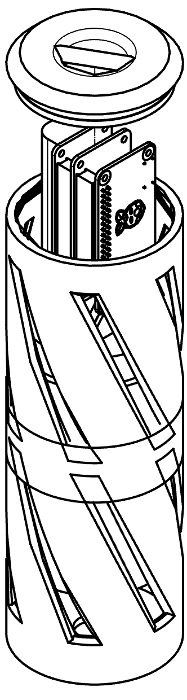
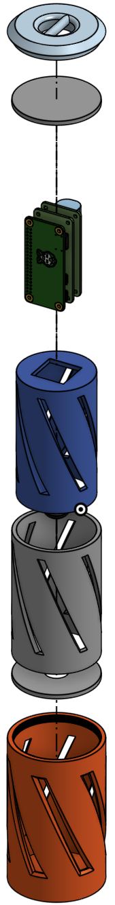

Preliminary design
One Descent.
Two Experiments.
We’re designing a CanSat to measure the air around it and track how it moves as it falls.
Cambridge Maths School UK CanSat Competition
Follow the mission
Assembly concept
Exploded viewPrimary mission
Measure the atmosphere.
During descent, CMSat is designed to measure air pressure and temperature and radio the readings to the ground station. The ground station will use pressure to estimate altitude.
Planned transmission rate
One transmission per second
- CanSat
- Radio link
- Ground station
Ground station
Synthetic demo · Mill Road, Cambridge
RX #42 · 1008.42 hPa · 18.6 °C
RH 54.2% · UV index 1.3
GPS 52.19855, 0.14106
ACC +0.12 −0.08 +9.74 m/s²
GYR +1.2 −0.4 +3.1 °/s
Secondary mission
Reconstruct the descent.
A gyroscope and accelerometer will help estimate the CanSat’s orientation. GPS will help reconstruct its path.
The team plans to combine those readings in a 3D visualisation of the descent to assess how the parachute performs.
- Pitch
- Forward or backward tilt
- Roll
- Side-to-side tilt
- Yaw
- Turn about the vertical axis
Mechanical design
Three layers, three jobs.
The proposed shell combines three materials to protect the payload and hold the electronics in place.
- PLA Inner shell
- Provides mounting points for the electronics.
- TPU Damping layer
- Cushions the assembly and helps absorb part of the landing impact.
- ABS Outer shell
- Forms the tough outer layer designed to withstand landing impact.
The team
Meet CMSat.
We’re five students at Cambridge Maths School taking part in the UK CanSat Competition.
Read the design review- Chief Systems Engineer
- Integrates the mechanical, electrical and software systems.
- Software Engineer
- Develops and tests the onboard software and ground-station interface.
- Mission Engineer
- Leads descent calculations, parachute design and performance testing.
- Design Engineer
- Leads mechanical design and physical construction.
- Finance and Partnerships Lead
- Manages finances, sponsorship and outreach.